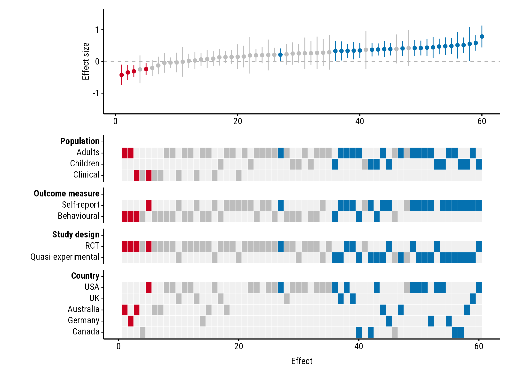

What forestmap draws
A forest plot shows each study in a meta-analysis with its effect size and confidence interval. forestmap sorts the studies from the smallest to the largest effect and adds a heatmap underneath showing each study’s properties: its population, design, country, or anything else you’ve coded. Reading down a column tells you about one study; reading across a row tells you where studies with that property fall among the effects.
1. Prepare your data
You need a data frame with one row per study and these columns:
| Column | What it holds |
|---|---|
| Effect size | The study’s effect, e.g. a standardised mean difference. |
| Sampling variance | The variance of that effect, e.g. vi from
metafor::escalc(). |
| One column per study property | A factor giving the study’s level, e.g. "RCT", or a
number, e.g. mean age. NA means the study doesn’t report
it. |
The package comes with made-up data from 60 studies:
head(forestmap_example)
#> study smd vi n population outcome design
#> 1 Wang 2005 0.470 0.01581 253 Children <NA> RCT
#> 2 Hughes 2013 0.261 0.03704 108 Children Behavioural RCT
#> 3 Rossi 2005 0.510 0.04545 88 Adults Self-report Quasi-experimental
#> 4 Baker 2006 0.410 0.01493 268 Adults <NA> Quasi-experimental
#> 5 Hughes 2008 0.786 0.03077 130 Children Self-report RCT
#> 6 Martin 2023 0.260 0.06349 63 Adults <NA> RCT
#> country
#> 1 USA
#> 2 <NA>
#> 3 Canada
#> 4 Australia
#> 5 USA
#> 6 USAThe order of a factor’s levels sets the order of the rows in the
heatmap, so use factor(x, levels = ...) to change it.
If you’ve computed effect sizes with metafor’s
escalc(), your data already has the effect
(yi) and sampling variance (vi): pass them as
es = "yi", vi = "vi".
Instead of variances you can give standard errors
(se = "..."), or the lower and upper
bounds of each 95% confidence interval
(lb = "...", ub = "..."). Use the bounds when the interval
isn’t symmetric, such as odds ratios on their original scale. From
variances or standard errors, the interval is the effect ± 1.96 standard
errors.
2. Make the plot
Tell plot_forestmap() which column is which. Naming the
study properties sets the headings in the plot:
plot_forestmap(
forestmap_example,
es = "smd",
vi = "vi",
moderators = c(
"Population" = "population",
"Outcome measure" = "outcome",
"Study design" = "design",
"Country" = "country"
)
)
3. Read the plot
- Each column is one study. The top panel shows its effect and 95% confidence interval; the tiles below show its properties.
- Blue studies have a confidence interval entirely above zero, red ones entirely below, and grey ones include zero. Each study’s tiles take the same colour.
- A row with its tiles bunched at one end means studies with that property tend to find smaller (left) or larger (right) effects. Here, every negative effect comes from an RCT, and the largest effects come mostly from quasi-experimental studies using self-report measures.
4. Save it
plot_forestmap() returns the plot; saving it is up to
you. Choose the size when you save:
p <- plot_forestmap(
forestmap_example, "smd", vi = "vi",
moderators = c("Population" = "population", "Study design" = "design")
)
ggplot2::ggsave("forestmap.png", p, width = 7, height = 5.25, dpi = 300)
ggplot2::ggsave("forestmap.svg", p, width = 7, height = 5.25)
ggplot2::ggsave("forestmap.pdf", p, width = 7, height = 5.25, device = cairo_pdf)With many study properties, make the plot taller
(e.g. height = 10).
The default font, Roboto Condensed, comes with forestmap, and PNG and
SVG files saved with ggsave() always use it. Two places
only see fonts installed on your computer, and show another font until
you install Roboto Condensed (the font files are in the folder given by
system.file("fonts", package = "forestmap")):
- RStudio’s Plots pane. Alternatively, set Tools > Global Options > General > Graphics > Backend to AGG.
-
PDF files, saved with
device = cairo_pdfas above.
Next steps
The guides show every option, with an example of each:
- Study properties: headings, order, and shortening a tall heatmap.
- Numeric study properties: properties such as mean age or sample size.
- Effect sizes and axes: ratios, a band of negligible effects, and axis ranges.
- Colours, fonts and size: palettes, fonts, text and label sizes, and panel heights.
- Vertical layout: one study per row, with study names, for long meta-analyses.
- Adding to the plot and saving: titles, a pooled-effect line, and saving to a file.